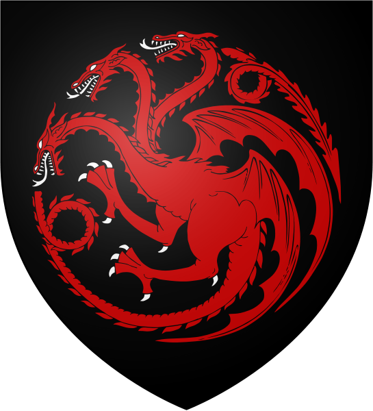
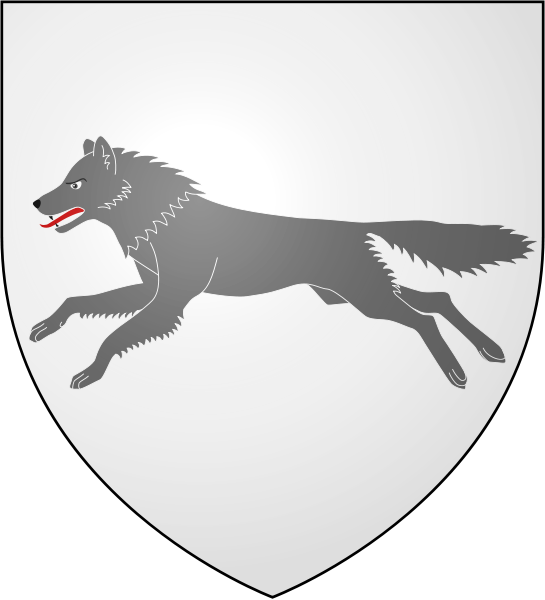
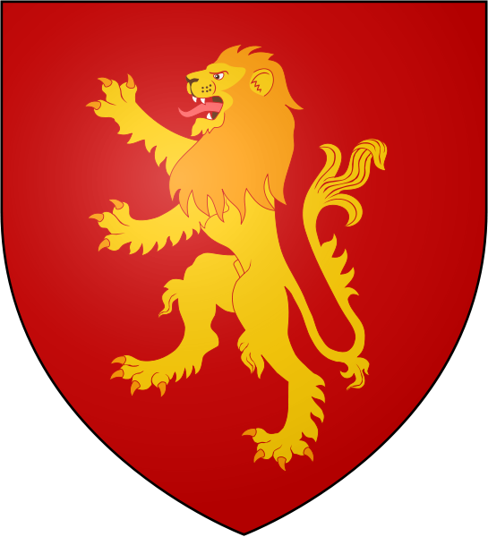
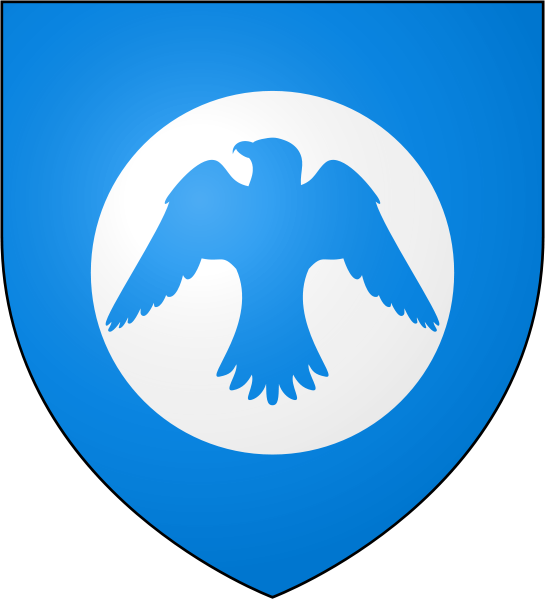
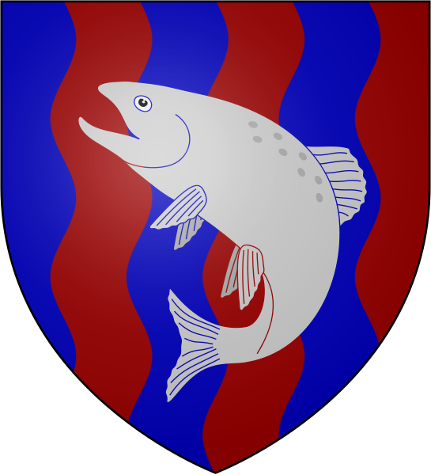
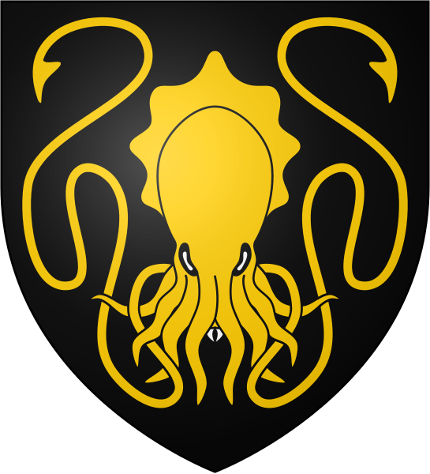
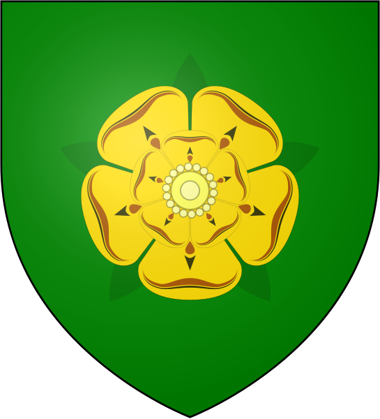
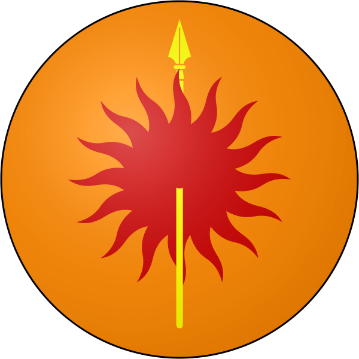

House Targaryen of Dragonstone is a noble family of Valyrian descent who once ruled the Seven Kingdoms of Westeros. The Targaryen sigil is a three-headed dragon breathing flames, red on black. The house words are "Fire and Blood". It eventually became the first royal house of the Seven Kingdoms, as House Targaryen of King's Landing.
Game of Thrones
House Greyjoy of Pyke is one of the Great Houses of Westeros. It rules over the Iron Islands, a harsh and bleak collection of forbidding islands off the west coast of Westeros, from the Seastone Chair in the castle of Pyke on the island of the same name. The head of the family is traditionally known as the Lord Reaper of Pyke. Their sigil is a golden kraken on a black field, and their house motto is "We Do Not Sow."
House Stark of Winterfell is one of the Great Houses of Westeros and the principal noble house of the north. In days of old they ruled as Kings of Winter, but since Aegon's Conquest they have been Wardens of the North and ruled as Lords of Winterfell. Their seat, Winterfell, is an ancient castle renowned for its strength. Their sigil is a grey direwolf racing across a field of white. Their words are "Winter is Coming", one of only a few house mottoes to be a warning rather than a boast.
House Baratheon of Storm's End is one of the Great Houses of Westeros, and is the principal house in the stormlands, which they rule as Lords Paramount of the Stormlands. Their seat, Storm's End, is an ancient castle raised by the Storm Kings from the now-extinct House Durrandon. The Baratheon sigil is a crowned black stag on a field of gold. Members of the family tend to be tall and powerfully built, with black hair and blue eyes, as well as strong, square jawlines. They are known for their mercurial tempers, and their words are "Ours is the Fury".
House Lannister of Casterly Rock is one of the Great Houses of Seven Kingdoms, and the principal house of the westerlands. Their seat is Casterly Rock, though another branch exists in nearby Lannisport. Their sigil is a golden lion on a field of crimson. Their official motto is "Hear Me Roar!" However, their unofficial motto, equally well known, is "A Lannister always pays his debts."
House Tyrell of Highgarden is one of the Great Houses of the Seven Kingdoms, being Lords Paramount of the Mander and the liege lords of the Reach. A large, wealthy house, its wealth is only surpassed among the Great Houses by House Lannister, and the Tyrells can field the greatest armies. Additionally, if they call the ships of the Redwyne fleet, the lords of the Shield Islands, and the coastal lords, they can command a navy that equals if not surpasses the royal fleet of King's Landing. Highgarden is an ancient seat of rule and the heart of chivalry in the Seven Kingdoms; the Tyrells style themselves 'Defenders of the Marches' and 'High Marshals of the Reach', and traditionally, they have been Wardens of the South in addition to Lords Paramount of the Mander. Their sigil is a golden rose on a green field, and their words are "Growing Strong".
House Arryn of the Eyrie is one of the Great Houses of Westeros, and is the principal noble house in the Vale of Arryn. Their main seat is the Eyrie, which is considered impregnable. House Arryn has at least one other holding, their winter castle at the Gates of the Moon, which was once their main seat
House Nymeros Martell of Sunspear, usually simply called House Martell, is one of the Great Houses of the Seven Kingdoms and the ruling house of Dorne. "Nymeros" indicates "of the line of Nymeria," referring to the union of the Martells with the Rhoynish warrior queen Nymeria around 700 BC. Prince of Dorne rules Dorne from Sunspear in southeastern Dorne.
House Tully of Riverrun is one of the Great Houses of the Seven Kingdoms. Lord Hoster Tully, the Lord Paramount of the Trident, rules over the riverlands from the Tully seat of Riverrun. Their sigil is a silver trout leaping on a striped field of blue and mud red, and their house words are "Family, Duty, Honor."
| Targaryen | Stark | Lannister |  |  |  | Arryn | Tully | Greyjoy |  |  |  | Baratheon | Tyrell | Martell |

|
 |  |
|---|